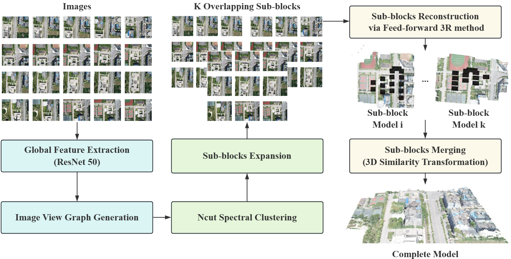
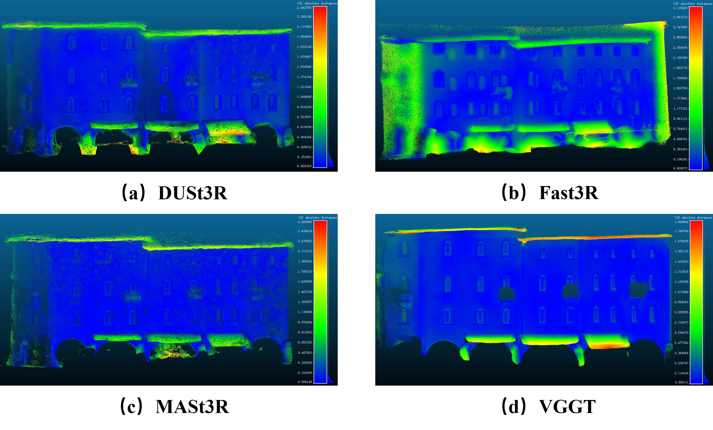
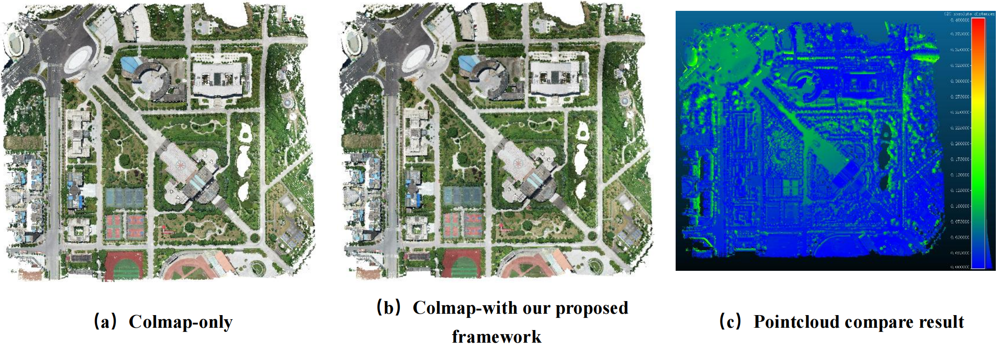
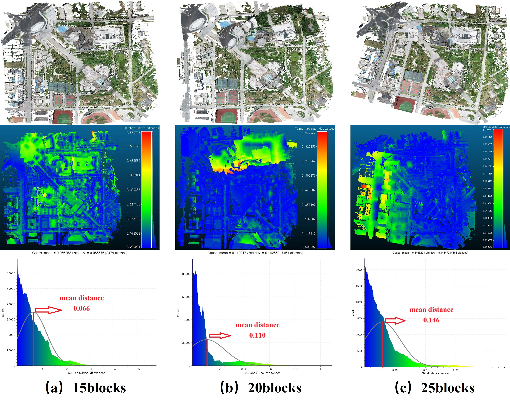
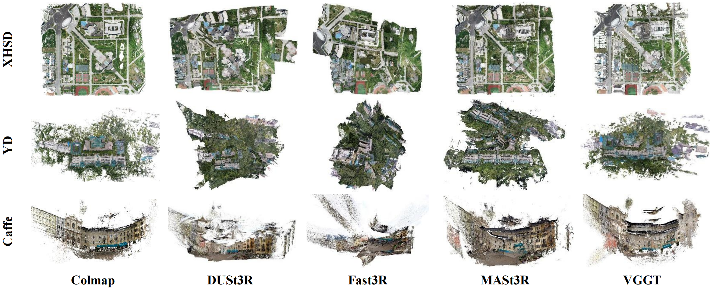
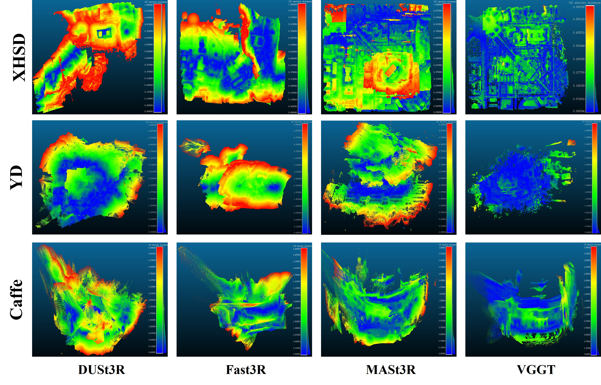

Surveys on feed-forward 3R methods for high-resolution photogrammetric images via image divide-and-conquer strategy
Zhe Shen, Mengmeng Shu, Guanbo Wang, Yifei Yu
*, Zongqian Zhan, Xin Wang
School of Geodesy and Geomatics, Wuhan University, Wuhan, P.R.China

Pipeline of the proposed image divide-and-conquer framework
Recently, data-driven feed-forward 3D reconstruction methods, such as DUSt3R, MASt3R, Fast3R and VGGT, have gained widespread attention due to their superior end-to-end processing capabilities across various geometric 3D vision tasks. However, heavy reliance on GPU hardwares limits the applicability of these 3R methods to only single-image pairs or small-scale datasets, making them challenging to handle large-scale high-resolution photogrammetric images. In this work, we conduct a survey on these 3R methods and employ a divide-and-conquer framework that divides the entire image dataset into several overlapping sub-blocks, reconstructs each sub-block separately using 3R methods, and then merges them per 3D similarity transformations. Experimental results demonstrate that our method effectively expands the number of images that the aforementioned feed-forward 3R methods can handle. Furthermore, a comprehensive experiment on photogrammetric data is carried out by comparing the processing time, GPU memory usage, and accuracy to explore the possibility of applying these novel feed-forward 3R methods to high-resolution photogrammetric datasets.
All experiments are run on the machine with a single NVIDIA RTX4090 GPU.
1.Datasets
All the datasets used in our experiments are shown in the following Table:
| Dataset name |
Image number |
Ordered/Disordered |
Number of cameras |
Data type |
Image resolution |
| XHSD |
400 |
Ordered |
1 |
UAV |
5472×3648 |
| YD |
291 |
Disordered |
5 |
UAV |
6000×4000 |
| Caffe |
287 |
Disordered |
3 |
close-range |
1920×1980 |
2.Performance of 3R methods on single sub-block
To evaluate the performance of these 3R methods within one single inference, a single sub-block from caffee dataset is tested
and their results are compared with the ground-truth point clouds from LiDAR.
Here is Individual sub-block reconstruction results.

3.Feasibility of the image divide-and-conquer framework
In order to validate the feasibility of proposed image divide-and-conquer framework, we divide the dataset XHSD into 15
sub-blocks and perform reconstruction using COLMAP within the proposed framework. The reconstruction results obtained
from our proposed framework are compared with those from directly applying COLMAP to the entire scene without partitioning.
Here is Colmap results with/without our divide-and-conquer strategy.

4.Investigation on the impact of different blocks numbers
To explore the impact of different partitioned sub-blocks number, the XHSD dataset is divided into 15, 20, and 25 sub-blocks,
respectively. Then they are reconstructed using four 3R methods within the proposed framework in this paper. Taking the
reconstruction result of VGGT as an example, as shown in Fig.

5.Evaluation of 3R methods on image partitioning framework
Based on the optimal partitioning strategy in the paper, we divided the three datasets XHSD, YD, and Caffe into 15, 12,
and 10 sub-blocks, respectively. Using four feed-forward 3R
methods, experiments are conducted under the proposed framework, and the reconstruction results of XHSD, YD, and Caffe
are shown in Fig.

To evaluate the reconstruction results of the four 3R methods, the reconstructions generated by the
traditional method COLMAP (well-known for its accuracy and robustness) are selected as the ground-truth for XHSD, YD and
Caffe, comparing the 3R method results with the reference point clouds from COLMAP, the 3D spatial accuracy of the four 3R
methods is shown in Fig.

For other details, please refer to our paper.
This work was jointly supported by the National Natural Science Foundation of China (42301507) and the Natural Science Foundation of Hubei Province, China (2022CFB727).
If you have any questions or advice, you can contact us via following address:
- shenzhe@whu.edu.cn, Zhe Shen, WuHan University
- yfyu2020@whu.edu.cn, YiFei Yu, WuHan University
- zqzhan@sgg.whu.edu.cn, Zongqian Zhan, WuHan University
- xwang@sgg.whu.edu.cn, Xin Wang, WuHan University